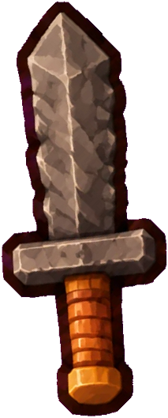

<title>Item Models</title>
<meta name="claude:viewport-fit-sides" content="cover">
<link rel="preconnect" href="https://fonts.googleapis.com">
<link rel="stylesheet" href="https://fonts.googleapis.com/css2?family=Alegreya:wght@700&family=Alegreya+Sans:wght@400;500;700&display=swap">
<style>
:root {
  --bg: #1d1511; --panel: #2a1e17; --line: #4a3424; --fg: #f5e4bc; --dim: #c2ac88; --amber: #ffbe45; --sky: #31404c;
  color-scheme: dark;
}
body { background: var(--bg); color: var(--fg); font: 17px/1.5 "Alegreya Sans", system-ui, sans-serif; }
main { max-width: 1060px; margin: 0 auto; padding-block: 28px 48px;
  padding-left: max(16px, env(safe-area-inset-left, 0px)); padding-right: max(16px, env(safe-area-inset-right, 0px)); }
h1 { font: 700 34px/1.15 Alegreya, Georgia, serif; margin: 0 0 6px; text-wrap: balance; }
h2 { font: 700 22px/1.2 Alegreya, Georgia, serif; margin: 0 0 8px; color: var(--amber); }
p { margin: 0 0 10px; max-width: 68ch; color: var(--dim); }
.grid { display: grid; grid-template-columns: minmax(0, 1fr) 260px; gap: 16px; margin-top: 18px; }
@media (max-width: 760px) { .grid { grid-template-columns: minmax(0, 1fr); } }
.view { position: relative; background: radial-gradient(circle at 50% 35%, #3d4c58, var(--sky) 70%); border: 2px solid var(--line); border-radius: 6px; aspect-ratio: 4 / 3; max-width: 100%; overflow: hidden; touch-action: none; }
.view canvas { display: block; width: 100%; height: 100%; }
.side { display: flex; flex-direction: column; gap: 14px; min-width: 0; }
.card { background: var(--panel); border: 1px solid var(--line); border-radius: 6px; padding: 12px; }
.row { display: flex; flex-wrap: wrap; gap: 8px; }
button { font: 700 15px "Alegreya Sans", system-ui, sans-serif; color: var(--fg); background: #3a2a1f; border: 1px solid var(--line); border-radius: 999px; padding: 6px 14px; cursor: pointer; }
button[aria-pressed="true"] { background: var(--amber); color: #2a1a0c; border-color: var(--amber); }
.icon { display: grid; place-items: center; background: #2c211b; border-radius: 4px; padding: 10px; }
.icon img { image-rendering: auto; max-height: 220px; }
.tex img { width: 100%; image-rendering: pixelated; border: 1px solid var(--line); }
.label { font-size: 13px; letter-spacing: .06em; text-transform: uppercase; color: var(--dim); margin-bottom: 6px; }
ul { margin: 0; padding-left: 18px; color: var(--dim); }
li { margin-bottom: 4px; }
.hint { position: absolute; left: 10px; bottom: 8px; font-size: 13px; color: #d7e2ea; opacity: .8; pointer-events: none; }
</style>
<main>
  <h1>Item models: stone sword</h1>
  <p>The items in 3D, made from their icons. A first try at turning an item icon into a model: boxes at 64 texels a block, shaped from your icon turned upright. Drag to turn it, scroll or pinch to zoom. Three textures on the same boxes: refined (your icon's colors with painted edges and shading), your icon's raw colors, or the painter the animals use.</p>
  <div class="grid">
    <div class="view" id="view"><div class="hint">drag to turn &middot; scroll to zoom</div></div>
    <div class="side">
      <div class="card">
        <div class="label">Texture</div>
        <div class="row" id="tex"></div>
      </div>
      <div class="card">
        <div class="label">View</div>
        <div class="row" id="views"></div>
      </div>
      <div class="card">
        <div class="label">The icon it comes from</div>
        <div class="icon"></div>
      </div>
    </div>
  </div>
  <div class="grid">
    <div class="card">
      <h2>How it's built</h2>
      <ul>
        <li><b>7 boxes</b>, 87 texels long (1.36 blocks; the blade is 70% of it, like a real arming sword): pommel, grip, a wide guard, a 3-texel-thick blade with a raised ridge down its middle, and the point from two boxes turned 45 degrees.</li>
        <li>Widths read off the icon: blade about half the guard's width. The icon's blade is drawn short and stubby, as icons are; the model's is longer, its stone pattern repeated rather than stretched.</li>
        <li><b>Refined</b> (the default): your icon's colors put on a few deliberate shades per material, with the light painted the way Hytale's and Blockbench's style guides do it: a lit rim on each face's top and left edges and a dark one on its bottom and right, soft shadow where parts meet, the blade brightest toward the point, lighter cutting edges with chips, cord wound round the grip in bands.</li>
        <li><b>Icon colors</b>: each face is sampled from the icon at the same spot, so the stone and the wooden grip keep your icon's look; the sides take the color just inside each edge.</li>
        <li><b>House painter</b>: the light, shading and occlusion every animal and prop has, in colors taken from the icon, with stone chips and cord wound round the grip.</li>
        <li>A 128&times;64 texture, which the engine's held items can show texel for texel.</li>
      </ul>
    </div>
    <div class="card tex">
      <div class="label">The texture</div>
      
    </div>
  </div>
</main>
<script src="https://cdn.jsdelivr.net/npm/three@0.147.0/build/three.min.js"></script>
<script src="https://cdn.jsdelivr.net/npm/three@0.147.0/examples/js/controls/OrbitControls.js"></script>
<script>
const view = document.getElementById("view");
const renderer = new THREE.WebGLRenderer({ antialias: true, alpha: true });
renderer.setPixelRatio(Math.min(devicePixelRatio, 2));
view.prepend(renderer.domElement);
const scene = new THREE.Scene();
const camera = new THREE.PerspectiveCamera(30, 4 / 3, 1, 2000);
const controls = new THREE.OrbitControls(camera, renderer.domElement);
controls.enableDamping = true;
controls.target.set(0, 44, 0);
scene.add(new THREE.AmbientLight(0xffffff, 0.75));
const sun = new THREE.DirectionalLight(0xffffff, 0.35); sun.position.set(-40, 80, 60); scene.add(sun);
const VIEWS = {
  "3/4": [90, 90, 140], "Front": [0, 44, 190], "Side": [190, 44, 0], "Top": [0, 240, 1], "Icon angle": [70, 44, 155],
};
let mesh, textures = {};
const loader = new THREE.TextureLoader();
function tex(name) {
  if (!textures[name]) {
    const t = loader.load(name + ".png", () => render());
    t.magFilter = t.minFilter = THREE.NearestFilter; t.generateMipmaps = false; t.encoding = THREE.sRGBEncoding;
    textures[name] = t;
  }
  return textures[name];
}
renderer.outputEncoding = THREE.sRGBEncoding;
fetch("model.json").then(r => r.json()).then(m => {
  const pos = [], uv = [], nor = [], idx = [];
  m.quads.forEach((q, i) => {
    const [u0, v0, u1, v1] = q.uv;
    const c = [[u0, v0], [u1, v0], [u1, v1], [u0, v1]];
    q.p.forEach((p, k) => { pos.push(...p); uv.push(c[k][0], 1 - c[k][1]); nor.push(...q.n); });
    const b = i * 4;
    idx.push(b, b + 2, b + 1, b, b + 3, b + 2);
  });
  const g = new THREE.BufferGeometry();
  g.setAttribute("position", new THREE.Float32BufferAttribute(pos, 3));
  g.setAttribute("uv", new THREE.Float32BufferAttribute(uv, 2));
  g.setAttribute("normal", new THREE.Float32BufferAttribute(nor, 3));
  g.setIndex(idx);
  // flip the winding if the faces point inward
  g.computeVertexNormals();
  mesh = new THREE.Mesh(g, new THREE.MeshLambertMaterial({ map: tex("refined"), side: THREE.FrontSide }));
  scene.add(mesh);
  pickTex("refined"); pickView("3/4");
});
const TEX = { refined: "Refined", icon: "Icon colors", house: "House painter" };
const texRow = document.getElementById("tex");
function pickTex(k) {
  if (mesh) { mesh.material.map = tex(k); mesh.material.needsUpdate = true; }
  document.getElementById("sheet").src = k + ".png";
  [...texRow.children].forEach(b => b.setAttribute("aria-pressed", b.dataset.k === k));
  render();
}
Object.entries(TEX).forEach(([k, label]) => {
  const b = document.createElement("button"); b.textContent = label; b.dataset.k = k; b.onclick = () => pickTex(k); texRow.append(b);
});
const viewRow = document.getElementById("views");
function pickView(k) {
  camera.position.set(...VIEWS[k]); controls.update();
  [...viewRow.children].forEach(b => b.setAttribute("aria-pressed", b.dataset.k === k));
  render();
}
Object.keys(VIEWS).forEach(k => {
  const b = document.createElement("button"); b.textContent = k; b.dataset.k = k; b.onclick = () => pickView(k); viewRow.append(b);
});
function size() {
  const r = view.getBoundingClientRect();
  renderer.setSize(r.width, r.height, false); camera.aspect = r.width / r.height; camera.updateProjectionMatrix(); render();
}
function render() { renderer.render(scene, camera); }
new ResizeObserver(size).observe(view);
(function loop() { requestAnimationFrame(loop); if (controls.update()) render(); else render(); })();
</script>
